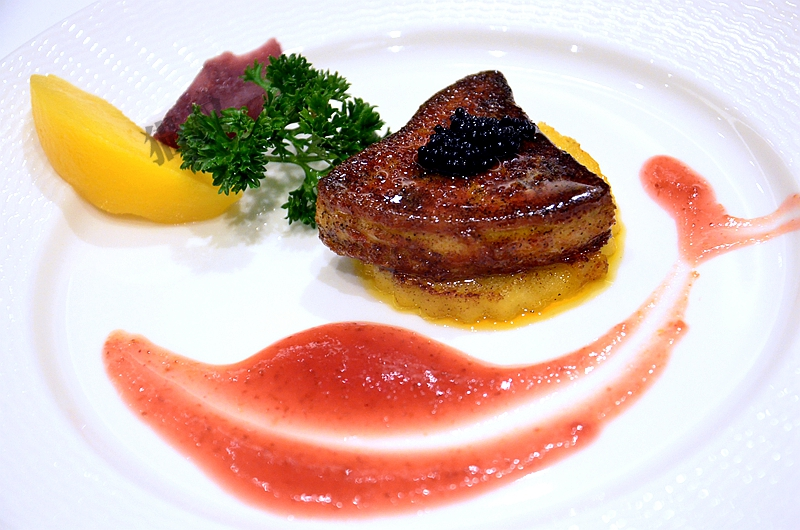

喜之秋养生铁板烧位于厦门SM2期旁边的骏豪会里，是骏豪会旗下众多餐饮品牌中的一员，是家高端的养生铁板烧餐厅，为啥叫养生铁板烧呢，因为店里的食材、调料等都是选用健康天然的优质产品，盐是目前世界上等级最高的来自喜马拉雅山地底的喜马拉雅山水晶盐，形成于3亿年前左右，含有丰富矿物质和微量元素，色泽粉嫩如同水晶，油是来自意大利的特级初榨橄榄油，其他酱料也都是大厨自己手工制作，不含任何添加剂。食材也都是选用顶级的优质食材，因此有养生一说。品质如此优异，价格自然也不便宜，套餐从500左右每人到一千多每人都有，人均800左右，厦门十大最贵餐厅之一应该当之无愧。食客如果有什么特别想吃的食材，也可以提前跟餐厅说，餐厅会通过自己的采购渠道采购优质的食材来满足顾客的喜好。这么棒的餐厅，也吸引了很多明星光顾，比如黄晓明伉俪、大小S等，就在这两天孙红雷还来了呢，穿个短裤，相当帅气。说了这么多，还是赶快来亲自品尝一番吧！

餐厅有6+2个包厢，包厢宽敞明亮，简洁大方，2-10人都有适合的包厢，食客围坐在大大的铁板前，看着大厨刀铲翻飞有如行云流水般的烹制食材，然后摆盘并端至面前，真是视觉和味觉的双重享受，一道菜一道菜的满满品味，十分享受。+2的意思是有两个树屋包厢，建造在院子中的水池边，如同树上的小屋，只能提供两名食客用餐，窗外是美丽的夜景倒映在水池中，屋内布置的温馨浪漫，连菜单都跟其他包厢不同，是永结同心那种类似婚宴的菜名，很适合情侣。包厢这么少，记得提前预定哦......

我们今天坐的是中包厢，据说孙红雷来吃饭坐的也是这个包厢哦。由行政总厨詹大厨亲自为我们料理，詹大厨来自台湾，有好多各种奖项、荣誉、头衔，厨师服上绣了好多代表着荣誉的徽章，最厉害的是幽默风趣，很有亲和力，让大家不但品尝美食，还吃的很开心。
鸳鸯双卷，这是道凉菜，借鉴了越南春卷，卷皮柔韧Q弹，里面包裹着多种馅料，清爽鲜美，还有甜美的水果，让人胃口大开。
蔬菜浓汤，汤汁浓郁醇厚，毫不清淡，搭配着面包吃更是可口，这面包是大厨自己做的，感觉添加了芝士，吃起来更加香甜。
澎湖大明虾佐蜂蜜芥末酱，虾很大只，已经去壳，整齐的摆放在铁板上，白嫩的虾肉看的人心里痒痒的，看着大厨熟练的烹制、摆盘，神情专注令人钦佩。很快大虾就端到了面前，虾肉饱满紧实，口感弹牙，味道鲜美，配上特制的蜂蜜芥末酱更是美味。
鱼子酱蒸蛋，一般的蒸蛋是在鸡蛋壳里蒸，这边的蒸蛋是在漂亮的玻璃容器中蒸，视觉效果更好，也更考验技术，蒸蛋色泽嫩黄，温润如玉，晶莹剔透，吹弹可破，再小心的放入黑的发亮的鱼子酱，吃的时候要一颗颗用舌尖顶破每颗鱼子酱，细细品味那种咸鲜的味道，才能领略到这海洋精华的美味，可别囫囵吞枣哦，那可就暴殄天物了。
银鳕鱼佐青酱，鳕鱼大块厚实，吃起来娇嫩细腻，鲜美清新，大厨特调的青酱有种独特的清香，跟鳕鱼真是绝配，最后连鱼肉带菌菇带青酱都吃的干干净净还意犹未尽。
法式焗蜗牛，这是法餐中的经典名菜，蜗牛肉被芝士包裹，吃的时候要旋转着把蜗牛肉连同芝士一同舀起送入口中，蜗牛肉紧实弹牙，配上香甜的芝士，果然美味。吃一颗蜗牛再吃一口加入了牛奶秘制的土豆泥，激活味蕾品尝下一颗蜗牛。
主厨沙拉佐水果酱，法餐上菜的排序是很有讲究的，时不时要激活味蕾，避免前面的味道影响了品尝下一道菜，这个沙拉就起到了这个作用，吃完顿时感觉味蕾焕然一新，准备迎接下一道美味。
法式煎鹅肝，鹅肝是我很喜欢的一种食材，看着大片厚实的鹅肝在铁板上满满的变色，在大厨的巧手下慢慢散发出诱人的香气，再搭配着苹果、鱼子酱装入盘中送到面前，切下一块送入口中，鹅肝的香浓、鱼子酱的咸鲜、苹果的甜美在口中混合，不禁闭目细细品味，陶醉在美味中。
苹果醋，冰爽酸甜，健康养生，同样起到清理的味蕾的作用。
菲力牛肉薄烧，把牛肉切成条状在铁板上烹制，这样受热更均匀也更容易入味，配着铁板烹制后去辣留香的蒜头一起吃，口感味道俱佳。

季节蔬菜，大餐接近尾声，清新爽口，去油解腻。
芝士蜂蜜蛋卷，也是大厨在铁板上烹制，看似简单的铁板真是妙用无穷，蛋卷香浓甜美，很棒的甜品。
今天是冬至，餐厅还贴心的给大家准备了汤圆，外面下着小雨，早上艳阳高照的时候我还嘲笑报纸上预报天气“今天淋成狗“的标题，没想到晚上真的淋成狗，不过享用了这么优雅美味的大餐，淋成狗也值了，据说冬至下雨春节就会是晴天，冬至晴天春节就会下雨，期待阳光明媚的春节.
 330445074@qq.com
330445074@qq.com 12345
12345